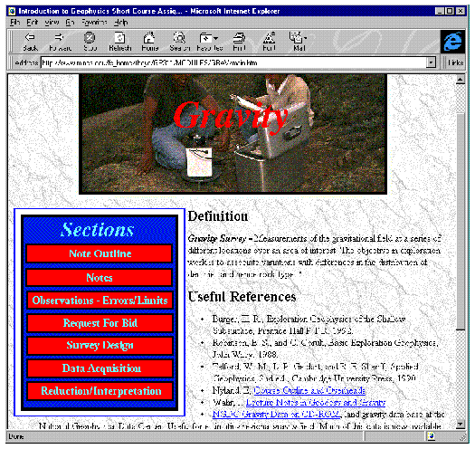

<p>
    Figure 1. Upon entering the Web site, students can access a variety of information about any one of four geophysical
    exploration methods; gravity (shown here), magnetics, DC resistivity, and
    refraction seismic. The Web-based environment allows students a great deal of flexibility in how
    they approach the subject matter. For example, students wanting to obtain specific information
    about some aspect of the method can easily navigate through lecture material that is presented
    in a hypercard format. Others, wanting to work on the interactive-case study and obtain
    background information as they need it can move directly to the request for bid (RFB).
</p>